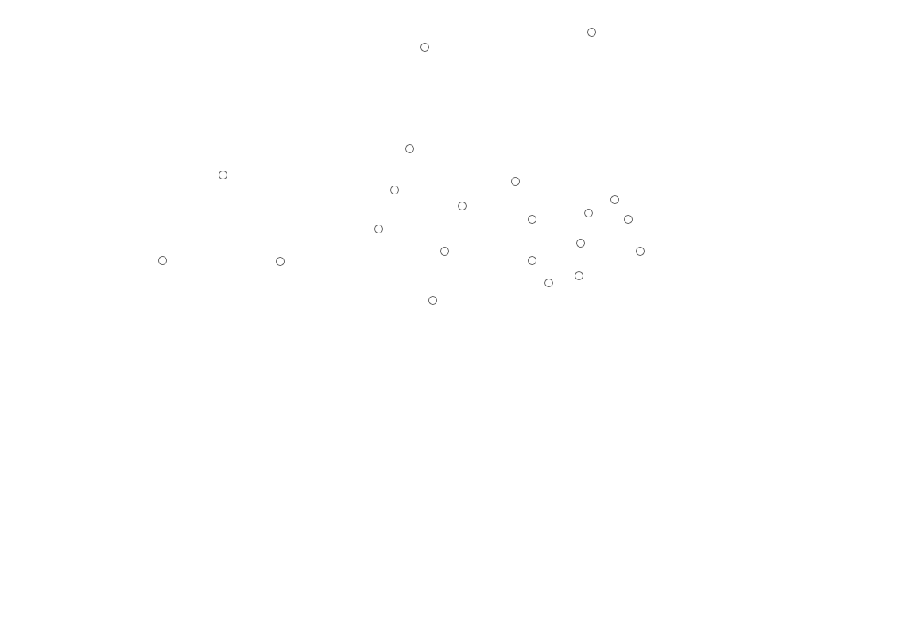

Als de toekomst er slecht uitziet, is er nog maar een optie: terug naar het verleden. Verken Terra Nova nu!
Personages
Nathaniel Taylor
Jim Shannon
Elisabeth Shannon
Josh Shannon
Maddy Shannon
Zoe Shannon
Sky Tate
Mira
Malclom Wallace
Tom Boylan

New Buildings
Om contact te hebben met de Sixers, deed Sky (de spion) vanaf deze plek met licht communiceren. Jim ging op onderzoek uit, maar kwam Sky niet tegen.
Huis van familie Shannon
Dit is het huis van Jim, Elisabeth, Josh, Maddy en Zoe. Ze wonen in het nieuwe woongebied.
Skys huis
Sky woont samen met Tasha, Max en Hunter. Sky's ouders zijn overleden. Ze verricht werk in de kolonie.
Markt
De Markt is waar de kolonisten van Terra Nova eten, kleren en andere dageijkse objecten kunnen kopen. Dit wordt betaald met Terra's.
Maddy doet hier vaak de boodschappen.
Josh en Sky hebben elkaar op de markt ontmoet.
Onderzoeks Lab
Dr. Malcolm Wallace werkt hier. Onderzoek wordt gedaan naar ziektes, virussen, planten, dinosauriers en andere dingen.
Ziekenhuis
Het ziekenhuis is Terra Nova's medische centrum voor de gewonde en zieke kolonisten. Elisabeth Shannon werkt er.
Maddy liep een dag mee met haar moeder, maar vond alle wonden maar niks.
School
De school waar Maddy, Josh en Zoe op zitten.
Probe
Nadat de wetenschappers in 2149 de breuk in de tijd vonden, was de volgende stap om een sonde ("probe") er naar te sturen. ZOE: Veel bewoners van Terra Nova hebben de stenen pilaar gesigneerd. Zoe ook. MADDY: "It's the probe! You know, the one they sent through when they first discovered the time fracture ... no one knew at first how far back the fracture went, or even where it led to. They sent this back with a beacon inside so that, you know, they could find it however many millions of years later. Only they never did. That's how they knew that they were dealing with a new time-stream."
Boylans Bar
Tom Boylan is de eigenaar. De bewoners van Terra Nova komen hier om te drinken en te socialiseren. Bepaalde illegale praktijken, zoals gokken, vinden hier ook plaats. Josh Shannon werkt hier, om zijn vriendin Kara uit 2149 naar Terra Nova te laten komen.
Command Base
Het center van Terra Nova. De beveilging werkt vanuit dit gebouw, geleidt door Commander Taylor.
Plein
Als er iets belangrijks wordt verteld aan alle bewoners van Terra Nova, gebeurt dat op dit plein. Ook als er een festival plaats vindt, bijvoorbeeld het Harvest Festival, gebeurt dat hier.
Nadat de Sixers en Taylor zijn ontvlucht aan een Carnotaurus komen ze op het plein terecht. Mira stelt een ruil voor.
Jungle
Er gebeurt veel OTG ("Outside The Gate"). Sixers De Sixers (vijanden uit de zesde pelgrimstocht) schuilen in de jungle. Outpost 3 Deze Outpost is een wetenschappelijk onderzoeks centrum. Het hoofd creeerde per ongeluk een virus, dat geheugenverlies veroorzaakt. Stenen bij de watervallen Teken en berekeningen zijn gegeraveerd in de stenen. Wie heeft dit gedaan? Waarom wordt dit geheim gehouden?
Beveiliging
De kolonie is omringd door een massief hek, met posten met sonic kanonnen bemand door het Beveiligingsteam.
Landbouw Velden
Groot grondgebied binnen Terra Nova waar verschillende gewassen worden gemaakt.
The Eye
"The Eye" is een holografische simulator. Het kan alle geschiedenis laten zien. Jim nam Zoe hier naartoe als verrassing.
The Brig
De plek waar gegijzelden en gevangenen tijdelijk worden gehouden.
Jim heeft hiet gevangen gezeten, toen men dacht dat hij de spion was.
The Gate
Zonder toestemming mag je niet zomaar OTG ("Outside The Gate").
Mira kwam hier om een gegijzelde van hun te ruilen met gegijzelden van het Beveiligingsteam.
Bij de appelbomen
Toen Maddy iemand erop verdachte van identiteitsdiefstal, kon diezelfde man niet riskeren dat de waarheid zou worden onthuld. Hier probeerde hij Maddy om te leggen door gebruik te maken van een dodelijke spin.
Gat in het hek
In het hek zit een gat groot genoeg om net doorheen te kunnen. Van deze mogelijkheid heeft vooral Sky maar ook Josh gebruik gemaakt om OTG ("Outside The Gate") te komen.